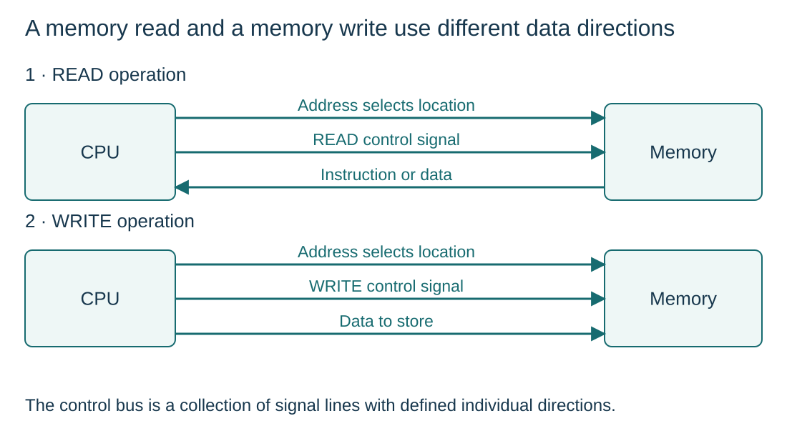

Address, data and control buses
Visual overview
A memory read and a memory write use different data directions

Visual transcript
- In the processor-controlled model, the address goes from CPU to memory for both reads and writes.
- For a read, data returns from memory to CPU; for a write, data goes from CPU to memory.
- READ and WRITE are CPU control outputs. Other control lines, such as interrupt requests, can be inputs.
The address bus carries the address that selects a memory location or an addressed interface. In the basic processor-controlled model it travels outwards from the processor. The data bus carries instructions and data between components and must support reads and writes.
The control bus is a set of coordinating signal lines. Read and write signals travel from the processor; signals such as interrupt requests travel towards it. Calling the control bus bidirectional describes the collection of lines, not a claim that every individual control signal travels both ways.
A read does not move the address into ACC. The CPU first selects the location through the address bus and requests a read through a control line. The stored contents return on the data bus and can be copied from MDR into ACC. Reading normally leaves the stored contents unchanged.
A write needs both a destination and a value: MAR supplies the address, MDR supplies the data, and the CU issues write. The same data wires can carry values in opposite directions on different transactions; they do not mean both components drive different values onto them at once.
For the shared calculation, reading Memory[4] sends address 4 outward and value 18 inward. Writing the result sends address 6 and value 42 outward, on different buses. A peripheral interrupt request is a control signal towards the CPU, illustrating why the control bus contains lines in both directions.
Worked example · Read then modify a value
- Read
For Memory[300]=8, the processor selects address 300 and issues read; the data bus returns 8.
- Calculate
An internal addition increases the value to 9.
- Write
The processor selects address 300 again, places 9 on the data bus and issues write. The stored value becomes 9.
A memory transaction
| Transaction | Address bus | Data bus | Control bus |
|---|---|---|---|
| Read Memory[300] | Processor → memory: 300 | Memory → processor: stored value | Read signal towards memory |
| Write 12 at address 301 | Processor → memory: 301 | Processor → memory: 12 | Write signal towards memory |
| Peripheral interrupt request | Not the event data | Not the request line | Interface → processor: request |
Core explanation · Exam essentials
- Address selects a location; data carries its instruction/value; control coordinates the transaction. A read and a write reverse the data direction.